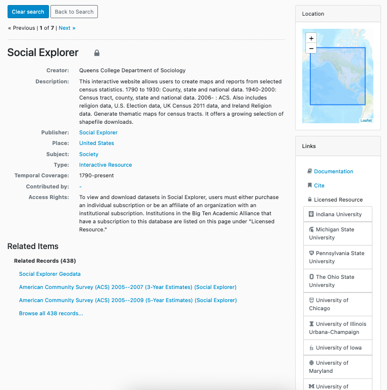
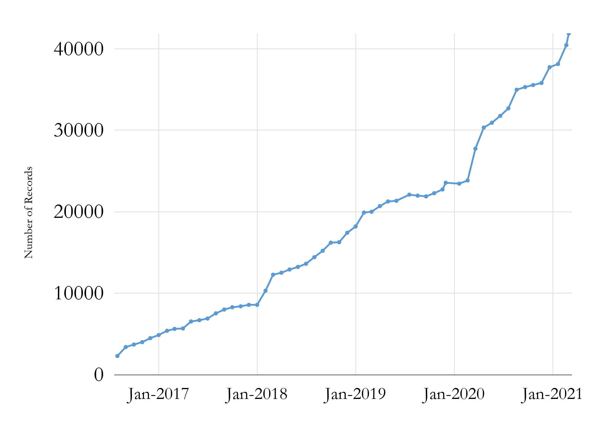
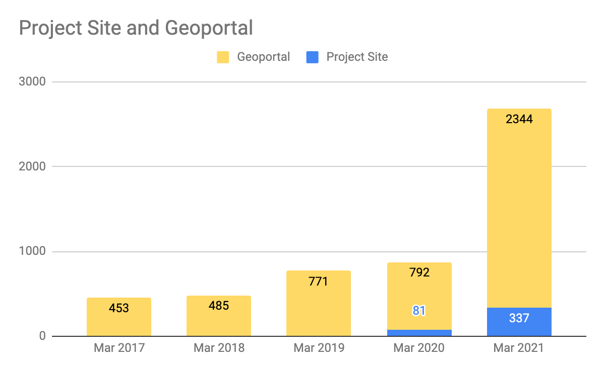
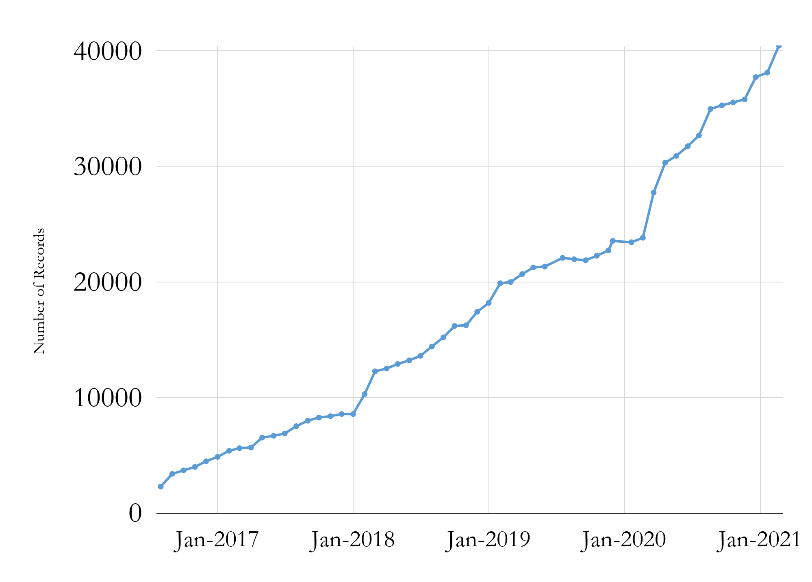
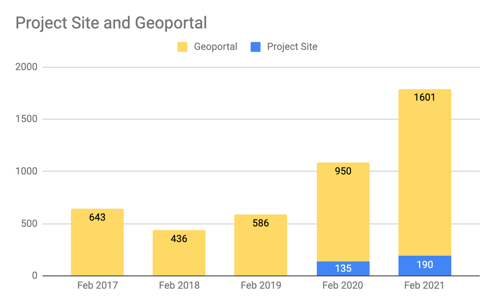
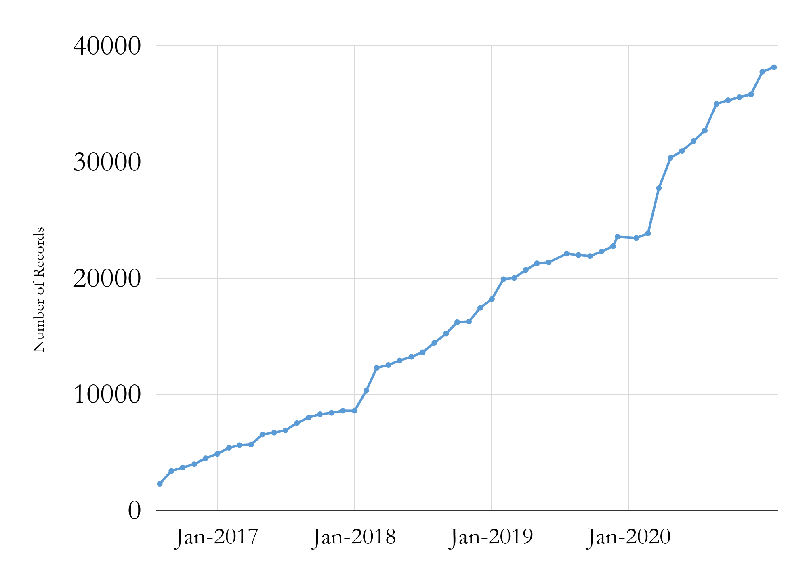
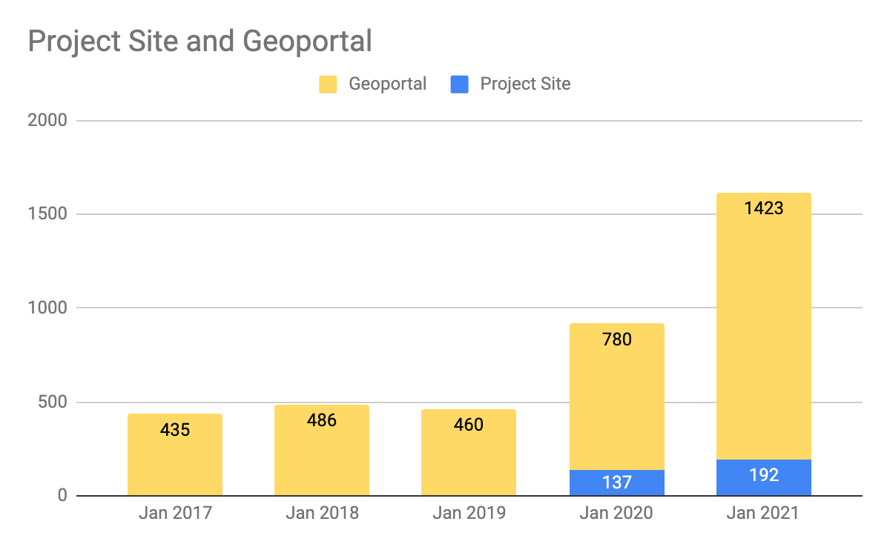

By Cecilia Smith This interview is part of our Data Provider Series, which highlights local governments and institutions that offer open GIS data. In each interview, providers tell us about their missions and data resources. We hope this will be a great way for readers to learn more about local GIS developments and new initiatives.
“Cookie County” a cookie cutter made by the Cook County GIS Department staff for GIS Day 2019. Interviewee Name: Todd Schuble*
* Title: GIS Manager
* Division/Department: Cook County Bureau of Technology, GIS Department
* Website: https://www.cookcountyil.gov/agency/geographic-information-systems-gis-0
By Kathleen Weessies The BTAA Geoportal brings together datasets from different sources. This can be helpful when you’re looking for data gathered by multiple government units. Trails are a perfect example: The state government and a local government will be paying attention to the trails under its own care. The joggler or unicyclist, however, only wants maintained surfaces away from motor vehicles. This map shows the trail dataset available from the State of Michigan (gray dashed line) and the trail dataset from Allegan County (orange dashed line). We can readily see that each entity has features that the other doesn’t.
By Caroline Kayko and Nicole Scholtz posted: Mar 10, 2021Interviewers: Caroline Kayko and Nicole Scholtz This interview is part of our Data Provider Series, which highlights local governments and institutions that offer open GIS data. In each interview, providers tell us about their missions and data resources. We hope this will be a great way for readers to learn more about local GIS developments and new initiatives. The Matthaei Botanical Gardens & Nichols Arboretum (MBGNA) is one organization with two locations at the University of Michigan. The locations feature gardens, trails, exhibits, a conservatory and more. MBGNA also creates many
What is the item? This map, created by Paul M. Paine in 1927, shows literary landmarks throughout the British Isles, with magnified inset maps of London and Edinburgh. It includes places where significant events -- both real and fictional -- happened, plus birthplaces and homes of prominent authors. Some places on the map are shown as little pictures, like Sherwood Forest and the Globe Theatre.
####
What BTAA Library submitted the item? Pennsylvania State University
The incorporation of licensed data in the geoportal has been a project goal since the beginning. Our 2017 Continuation Proposal indicated that we hoped to explore this integration beginning in Year 3 of the project. However\, challenges around mitigating authentication protocols\, providing access links\, and cataloging individual layers caused us to delay this goal. At the end of 2019\, we began gathering examples of licensed data and formed the Licensed Data Implementation Working Group to establish best practices for these kinds of resources. This working group spent one year exploring options and gathering additional records before issuing a final report.
As of Mid-March\, we now have published metadata records for 7 licensed databases in the geoportal. We also made over 900 metadata records for the individual layers and sets that can be found in those databases.

New rights field
Layers within the database
Access links for each subscribing institution
Statistics: Item Records

Total Item Records
41\,885
Mar. 2021 actions
New records: 1433
Statistics: Geoportal & Blog Users
Geoportal & Project Site* users for the months of March (2017-2021)
*Blog\, Help\, Tutorials\, Conference info

Statistics: Top Pages
Top Viewed Items
Top Downloaded Items
Wisconsin Historic Aerial Imagery Finder (Aerial Photos 1937-41) (384)
Remonumented Section Corners: Michigan (25) Traffic Signals - Fiber Optics Network: Dublin, Ohio (23) Building Footprints: Detroit, Michigan (12) Hyde Park Community /prepared by the Department of Sociology, the University of Chicago. (12)
Activities: Committees
Metadata Committee
Discussed the new Geoblacklight Metadata Schema
Planning a metadata sprint for May
Collection Development Committee
Finalized updates to Collection Development Policy.
Started discussion on identifying “core layers” for Big Ten states.
Communications Committee
Discussed Google Ads campaign
Scheduled a blog post sprint for April 23
Interface Committee
Planning for late spring/ summer interface design updates
What is the item? This is black and white aerial imagery captured in 2003 for Cook County, Illinois at 6 inch pixel resolution. The imagery was taken with panchromatic film, which is film sensitive to all wavelengths of visible light and capable of high spatial resolution. The Cook County imagery dating from 1998 is discoverable in the geoportal. Cook County Government makes the data available through theCook Central Open Data Portal as a web service and as a downloadable data set.
####
What BTAA Library submitted
4 min read
Big Ten Academic Alliance Geospatial Data Project
Project Update: February 2021
Table of Contents
Project Highlight for February
Geospatial Library Community Events
The month of February was dominated by two events in the geospatial library community: Geo4LibCamp and the GeoBlacklight Winter Community Sprint.
Geo4LibCamp is an annual unconference for anyone working with geospatial libraries\, including map librarians\, application developers\, researchers\, metadata specialists\, GIS technicians\, administrators\, and more. Since the inception of Geo4LibCamp in 2015\, the BTAA-GDP has been an active participant and leader in the unconference - serving on the organizing committee\, leading unconference sessions\, and providing lessons learned for institutions who are new to spatial data infrastructures.
The GeoBlacklight community holds a sprint two times per year. The most recent sprint was largely devoted to finalizing a major upgrade to the metadata schema and determining how it would be implemented in the application. These initiatives were both led by BTAA-GDP staff (Karen & Eric).
Statistics: Item Records

Total Item Records
40\,452
Feb. 2021 actions
New records: 2325
Statistics: Geoportal & Blog Users
Geoportal & Project Site* users for the months of February (2017-2021)
*Blog\, Help\, Tutorials\, Conference info

Statistics: Top Pages
Top Geoportal Items
Top Downloaded Items
Wisconsin Historic Aerial Imagery Finder (Aerial Photos 1937-41) (162)
Property Parcels: Prince George's County, Maryland (48)
Urban Rural Demarcation Line: Baltimore County, Maryland (37) Watersheds: Baltimore County, Maryland (16) Remonumented Section Corners: Michigan (12) Bicycle Lanes: Washington D.C. (12)
Activities: Committees
Metadata Committee
Reviewing controlled vocabularies for Subjects
Collection Development Committee
Updating Collections Policy
Communications Committee
Setting up upcoming Google AdWords campaign
Interface Committee
Planning for late spring/ summer interface design updates
Activities: Working Groups
Education Outreach Working Group (phase 2)
Currently drafting new tutorials
Diverse Collections Working Group
Gathering materials on local diversity audits happening (or not happening) at participating libraries
Help Pages Sprint Group
Held first 90 minute sprint session to draft help pages for users to have a better understanding of licensed data\, the Public Land Survey System\, and fire insurance maps
March: Hold two additional Help Pages sprints
March-June: Transition BTAA Geoportal records to the new GeoBlacklight metadata schema
What is the item? This item is a world map from 1853 created by M.F. Maury. It is centered around the prime meridian, showing where sperm whales and right whales can be found.
###
What BTAA Library submitted the item? University of Michigan
###
About the author Matthew Fontaine Maury (1806-1873) was a naval officer, hydrographer,
4 min read
Big Ten Academic Alliance Geospatial Data Project
Project Update: January 2021
Table of Contents
Project Highlight for January
Graduate Research Assistants (RAs)
The project supplies funding for a full-time Graduate Research Assistant (RA) each semester to aid the Metadata Coordinator. This funding has supported five students from the University of Minnesota’s MGIS program since 2017. Over the years\, three of these students extended their work with the project by signing up for internship or research credits _ to further develop their skills and broaden their resumes_ .
Our current RA is Ziying (Gene) Cheng\, who has been editing the metadata for all of our incoming records since the Fall 2020 semester\, during which time she has made many improvements to our Python harvesting and editing scripts. Gene has also signed up for internship credits for Spring 2021 to study application development. She has begun learning Ruby on Rails and plans to participate in the upcoming GeoBlacklight Community Sprint\, as well as assist our Application Developer on a local sprint in April 2021.
Yijing (Zoey) Zhou was our Summer 2020 RA\, and she has stayed on to work with our project to complete both internship and directed studies credits. Zoey has recently created a beta version of an interactive map depicting where our collections are located. She is now focusing on leveraging the GeoNames API to retrieve bounding boxes\, place names\, and linked data URIs to improve and normalize spatial searching in the Geoportal.
Statistics: Item Records

Total Item Records
38\,193
Jan. 2021 actions
New records: 387
New collections: 23
Statistics: Geoportal & Blog Users
Geoportal & Project Site* users for the months of January (2017-2021)
*Blog\, Help\, Tutorials\, Conference info

Statistics: Top Pages
Top Geoportal Items
Top Downloaded Items
Top blog post
Wisconsin Historic Aerial Imagery Finder (Aerial Photos 1937-41) (172)
COVID-19 Dashboard by the Center for Systems Science and Engineering (CSSE) at Johns Hopkins University (JHU) (97)
directed committees to identify future tutorial topics
Diverse Collections Working Group
Held kickoff meeting
Distributed request to Task Force to report on local diversity audits happening at their Library/institution
February is full of GeoBlacklight activities. Many Task Force members plan to attend the annual _ Geo4LibCamp\, and annual unconference hosted by Stanford that focuses on building repository services for geospatial data. The unconference is followed by by a 2-week _ GeoBlacklight Community Sprint.
We plan to put GEOMG\, our custom metadata editor\, into production mode. This will entail hosting it on a paid platform and integrating it with the Geoportal